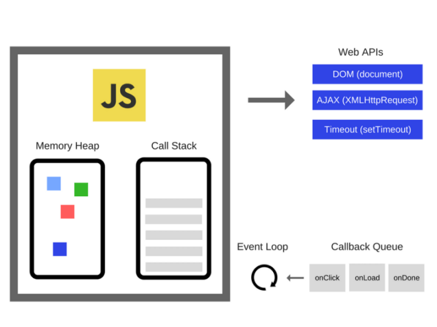
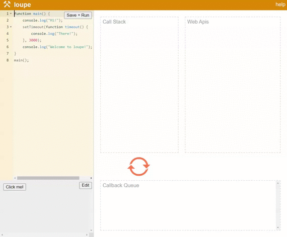
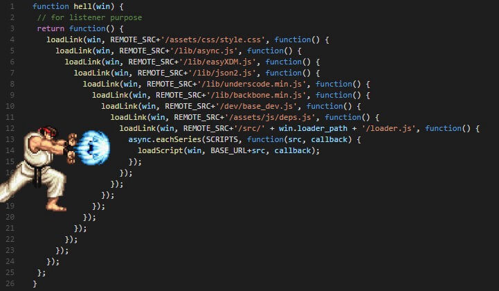
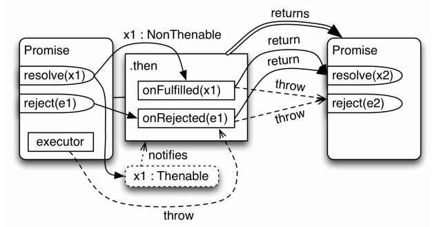
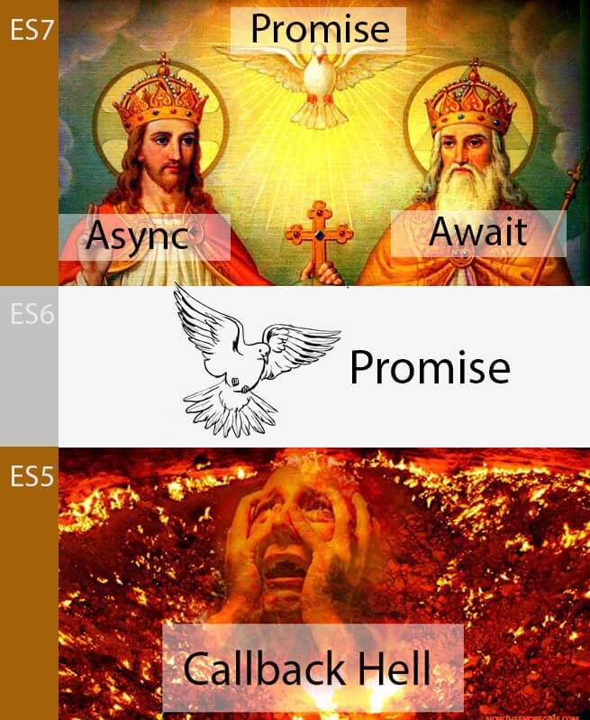

Bài gốc từ xdevclass: Phần 4: Bất đồng bộ callback, promise, async await trong Javascript
Cả môi trường trình duyệt và Node.js, Javascript đều chạy đơn luồng
Trong những chương trình đồng bộ, nếu bạn có 2 dòng code theo thứ tự L1, L2 thì L2 không thể bắt đầu chạy nếu L1 chưa chạy xong.
Trong những chương trình bất đồng bộ, nếu bạn cũng có 2 dòng code theo thứ tự L1, L2. Trong khi L1 sẽ được thực hiện một số tác vụ và hoàn thành trong tương lai thì L2 có thể chạy trước khi L1 hoàn thành.
Call Stack là một cấu trúc dữ liệu dạng ngăn xếp (stack) dùng để chứa thông tin về hoạt động của chương trình máy tính trong lúc thực thi. Call stack hoạt động theo kiểu LIFO (Last In First Out) tức là thằng vào sau cùng nhưng sẽ được thực hiện và thoát ra khỏi ngăn xếp đầu tiên.
Ví dụ đoạn code dưới đây
function a(x) {
console.log(x)
}
function b(y) {
a(y + 2)
}
function c(z) {
b(z + 1)
}
c(5)
Khi chạy đoạn code trên, ta sẽ có call stack trong Javascript được mô tả như thế này: Call Stack:
Tức là khi a() thực hiện xong, nó sẽ bị xóa khỏi call stack. b() được thực hiện và xóa khỏi call stack. c() được thực hiện và xóa khỏi call stack. Lúc này call stack trống thì chương trình đã thực hiện xong.
Trong một Javascript Runtime (môi trường chạy JS) còn có một số thứ khác quan trọng không kém Call Stack như Web APIs, Event Loop, Callback Queue.

Một ví dụ trực quan về cách hoạt động của Event Loop và Callback Queue
function main() {
console.log('Hi!')
setTimeout(function timeout() {
console.log('There!')
}, 3000)
console.log('Welcome to loupe!')
}
main()
Đoạn code trên sẽ thực hiện như sau
console sẽ in "Hi!" ra đầu tiênsetTimeout được gọi = > đẩy async callback là timeout vào Web Apis. Cho timeout đợi 3sconsole sẽ in ra "Welcome to loupe!""There!" mới xuất hiện
Mọi người ai coi không kịp thì có thể vào trang này để test.
Nếu để ý thì các bạn có thể thấy sau khi hàm main chạy xong và biến khỏi call stack thì timeout với console.log("There!") lại được đẩy vô.
Như mình đã đề cập bên trên, Javascript thì có call stack nhưng môi trường để chạy Javascript (Browser, NodeJs) thì còn có thêm các WebAPIs, event loop và callback queue. Và những thứ này hoạt động trên một luồng riêng biệt và được đảm bảo về tính thống nhất.
Vậy nên mình có thể tóm gọn lại như sau
Event loop là chủ đề nâng cao trong JS, mình nghĩ ae mới học hiểu như vậy là đủ rồi. Nếu muốn tìm hiểu sâu hơn thì có thể xem video này
Bất đồng bộ callback xuất hiện rất nhiều ở Javascript
Lắng nghe sự kiện click. Khi được click thì mới chạy callback function
document.getElementById('myBtn').addEventListener('click', displayDate)
function displayDate() {
document.getElementById('demo').innerHTML = Date()
}
Đọc file trong Node.js. Khi đọc file hoàn tất thì mới chạy callback function bên trong.
fs.readFile('demo.txt', (err, data) => {
console.log(data)
})
Nhưng sẽ dễ bị xảy ra hiện tượng Callback Hell (tức là có quá nhiều callback lồng nhau) nếu chúng ta cần sử lý theo tuần tự.

try {
setTimeout(() => {
throw new Error('Lỗi rồi')
}, 1000)
} catch (error) {
// Dòng này sẽ không bao giờ được chạy
console.log(error)
}
Promise đơn giản nghĩa là lời hứa, trong tương lai có thể làm hoặc không làm một hành động gì đó (thất hứa)
Một Promise có 3 trạng thái sau:
const p = new Promise(
/* executor */
function (resolve, reject) {
// statements
}
)
const p = new Promise((resolve, reject) => {
...
if(...) {
resolve(value) // thành công
} else {
reject(reason) // thất bại
}
})
promise
.then(
(value) => {
/* fulfillment */
},
(error) => {
/* rejection */
}
)
.catch((error) => {
/* rejection */
})
Ví dụ về in ra 'hello' sau 1s
// async callback thông thường
setTimeout(() => {
console.log('hello')
}, 1000)
// chuyển thành promise
const p = new Promise((resolve, reject) => {
setTimeout(() => {
resolve('hello')
}, 1000)
})
p.then((value) => {
console.log(value)
})
Promises are eager and not lazy. Tức promise thực thi khi bạn khai báo chứ không phải là khi bạn sài then(). Khi sài then() chỉ là lúc bạn lấy kết quả
let a = 1
const p = new Promise((resolve, reject) => {
a++
})
console.log(a) // 2
Để tránh điều này thì bạn có thể wrap nó vào trong một function
let a = 1
function runPromise() {
const p = new Promise((resolve, reject) => {
a++
})
return p
}
console.log(a) // 1
Một promise thì chỉ có thể rơi vào 1 trong 3 trạng thái như mình đã nêu trên. Không thể đã fulfilled rồi lại bị rejected được. Và sau khi thực hiện resolve() hay reject(), nếu có code phía dưới thì code đó vẫn được chạy. Ví dụ
const p = new Promise((resolve, reject) => {
resolve('done')
// Code sẽ chạy nhưng sẽ không được đưa vào rejected
reject(new Error('error'))
})
then / catch luôn return về một promise
return giá trị trong onFulfilled / onRejected sẽ đưa giá trị đó về trạng thái onFulfilled ở promise tiếp theo (tương tự thực hiện resolve)
throw giá trị trong executor / onFulfilled / onReject sẽ đưa giá trị đó về trạng thái onRejected ở promise tiếp theo

const p1 = new Promise((resolve, reject) => {
resolve(1)
})
p1.then((result) => result * 2).then((result) => {
console.log(result) // 2
})
const p2 = new Promise((resolve, reject) => {
reject(new Error('Lỗi 404'))
})
p2.catch((error) => error).then((result) => {
console.log(result.message) // Lỗi 404
})
const p = new Promise((resolve, reject) => {
throw new Error('Something wrong!')
})
p.catch((error) => {
console.log(error.message) // Something wrong!
})
Promise.resolve()Promise.reject()asyncFunc1().then(function (value1) {
asyncFunc2().then(function (value2) {
// thực hiện gì đó
})
})
Cách fix callback hell
asyncFunc1()
.then(function (value1) {
return asyncFunc2()
})
.then(function (value2) {
// thực hiện gì đó
})
function asyncFunc1() {
return new Promise(function (resolve, reject) {
asyncFunc2()
.then(function (data) {
// extra work with data
resolve(data)
})
.catch(reject)
})
}
cách fix dư thừa khai báo promise
function asyncFunc1() {
return asyncFunc2().then(function (data) {
// extra work with data
return data
})
}
Nếu ở phiên bản ES6 thì promise có thể giải quyết được phần nào callback hell, nhưng vẫn chưa được triệt để. Đến ES7 chúng ta có thể xử lý bất đồng bộ một cách dễ nhìn và dễ đọc hơn với async/await.
Chú ý: Async/Await không thay thế promise mà nó kết hợp với promise để cho ra cú pháp dễ nhìn hơn. Vì thế để học async/await yêu cầu bạn phải hiểu được promise

Async function: Luôn luôn return một promise
async function handle() {
return 1
}
// tương tự
function handle() {
return Promise.resolve(1)
}
Await: Chỉ hoạt động bên trong async function
async function handle() {
const promise = new Promise((resolve, reject) => {
setTimeout(() => resolve('done!'), 1000)
})
// đợi cho đến khi promise resolves (*)
const result = await promise
console.log(result) // "done!"
}
handle()
function handle() {
const promise = new Promise((resolve, reject) => {
setTimeout(() => resolve('done!'), 2000)
})
// SyntaxError
const result = await promise
}
handle()
Đoạn code dưới đây là sự thừa thải, bạn không cần chuyển một function đồng bộ thành bất đồng bộ
function sum(a, b) {
return a + b
}
async function handle() {
const result = await sum(1, 2)
return result
}
handle().then((res) => {
console.log(res)
})
async function getUser(username) {
try {
const response = await fetch(
`https://api.github.com/search/users?q=${username}`
)
return await response.json()
} catch (e) {
throw e
}
}
getUser('Duoc')
.then((res) => console.log(res))
.catch((err) => console.warn(err))
let x = 0
async function r5() {
x += 1
console.log(x)
return 5
}
;(async () => {
x += await r5()
console.log(x)
})()
// 1
// 5
Nên sửa lại thành như thế này
let x = 0
async function r5() {
x += 1
console.log(x)
return 5
}
;(async () => {
const y = await r5()
x += y
console.log(x)
})()
async function getBooksAndAuthor(authorId) {
const books = await fetchAllBook()
const author = await fetchAuthorById(authorId)
return {
author,
books: books.filter((book) => book.authorId === authorId)
}
}
Tối ưu performance với Promise.all().
Nhìn vào đoạn code bên trên, thay vì đợi lấy fetchAllBook() xong rồi đến fetchAuthorById() thì ta có thể cho 2 function này chạy ‘cùng lúc’
async function getBooksAndAuthor(authorId) {
const [books, author] = await Promise.all([
fetchAllBook(),
fetchAuthorById(authorId)
])
return {
author,
books: books.filter((book) => book.authorId === authorId)
}
}